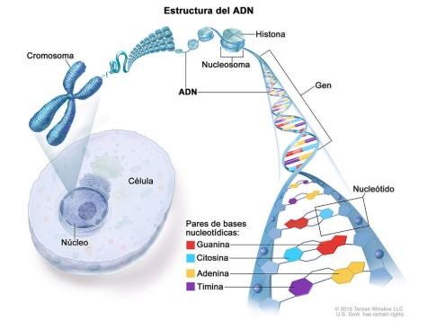

¿Cómo se forma el cáncer?
El cáncer es una enfermedad genética. Los cambios en los genes que controlan el funcionamiento de
las células, en especial, cómo se forman y multiplican, causan el cáncer.
Los cambios genéticos que causan cáncer se producen por estos motivos:
1. Errores que ocurren cuando las células se multiplican.
2. Daños en el ácido desoxirribonucleico (ADN) por sustancias perjudiciales en el medio
ambiente, como las sustancias químicas en el humo del tabaco y los rayos ultravioleta del
sol.
3. Se pasan por herencia de padres a hijos.

En general, el cuerpo elimina células con daños en el ADN antes de que se vuelvan cancerosas. Pero
la capacidad del cuerpo disminuye a medida que las personas envejecen. Por eso el riesgo de cáncer
aumenta con la edad.
El cáncer de cada persona es una combinación única de cambios genéticos. A medida que el cáncer
sigue creciendo, ocurren otros cambios. Incluso dentro del mismo tumor, es posible que las diversas
células tengan cambios genéticos distintos.
El cáncer es una enfermedad que se presenta cuando las células se multiplican sin control y se
diseminan a los tejidos que las rodean. Los cambios en el ADN (ácido desoxirribonucleico) causan el
cáncer. La mayoría de estos cambios que causan cáncer ocurren en los genes, que son trozos del ADN.